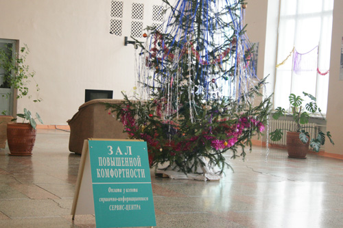

Однажды мне уже пришлось удивится наличием незаурядной коммерческой жилки у руководства кемеровского железнодорожного вокзала. Оказывается необходимость следовать однажды придуманным в «нерезиновой» стандартам может довести до еще большего абсурда.

В кемеровском ж/д вокзале теперь есть два зала ожадания. Один обычный рядами скамеек. А другой — VIP. VIP-зал этот тот же обычный, только в середине него установлен комплект мягкой мебели с рынка купленный на рынке «Колос» и телевизор, который наверное забрали у сторожа. Ожидать прибытия поезда в зале ожидания повышенной комфортности стоит.